The max clique feasibility problem can be described as follows:
An instance consists of a graph G=(V,E) and an integer k. The answer is YES if the graph contains a clique with at least k vertices; otherwise, the answer is NO.Show that the max clique problem is NP-complete.
(Hint: You may want to look at the complement of G=(V,E), that is, the graph G'=(V,E') where e is in E' if and only if it is not in E. You may also want to look at the node packing problem:
Given a graph G=(V,E) and a integer k, does there exist a subset 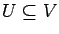 with 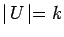 where no two of the vertices in U share an edge?)
(intentionally left blank)
Consider the 0-1 equality knapsack problem
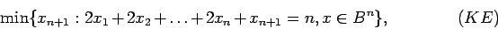
where n is an odd integer. We wish to solve this problem using a branch and bound algorithm with linear programming relaxations.
- (a)
- Show that xn+1=1 in any feasible solution to (KE). What is the optimal value of (KE)?
- (b)
- Assume we always separate using variable dichotomies (ie, add the constraints xi = 0 or xi = 1 for some i). Show that if no more than 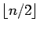 of the variables 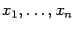 have been fixed at 0 or 1 then the relaxation has value 0. Hence show that an exponential number of nodes of the branch and bound tree must be considered to solve the problem.
- (c)
- Derive the valid inequality
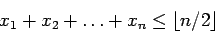
using the Chvatal-Gomory rounding procedure. - (d)
- What is the minimum number of nodes we need in the branch and bound process if we can separate using any linear inequality? (Assume that you obtain an extreme point optimal solution to any relaxation that you set up, provided such a solution exists.)
(intentionally left blank)
We have n objects and we want to find an ordering of the objects, so, given two objects i and j, either i is before j or j is before i. The ordering should be consistent; that is, if i is before j and j is before k then i should be before k. We get a reward wij if i is before j and a reward wji if j is before i. The objective is to maximize
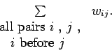
We can model this as an integer programming problem by introducing variables xij defined as follows:
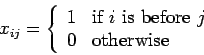
Let S be the set of points x which correspond to orderings; let conv(S) be the convex hull of S. This formulation has n(n-1) variables. You may assume that the dimension of conv(S) is n(n-1)/2.
- (a)
- Show that xij+xji=1 is valid for every ordering.
- (b)
- Show that the inequality 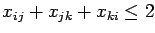 is valid for S for any i, j, and k.
- (c)
- For this part only, let n=3. Show that 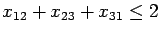 is a facet of conv(S).
- (d)
- Let
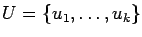
and
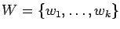
be two subsets of the objects. Show that the inequality
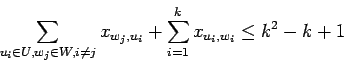
is valid for S. (Note that the inequality includes k edges pointing up in the picture and k(k-1)=k2-k edges pointing down.)
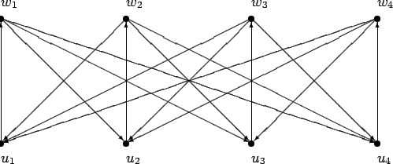
- (e)
- Find a point
 ,
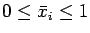,
which satisfies all the equalities in part 3a
and all the inequalities in part 3b,
but which violates the inequality in part 3d.
(Hint: such a point exists when k=3.)
,
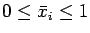,
which satisfies all the equalities in part 3a
and all the inequalities in part 3b,
but which violates the inequality in part 3d.
(Hint: such a point exists when k=3.)
(intentionally left blank)
(intentionally left blank)
Consider the integer programming problem
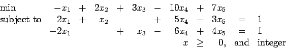
One feasible integral solution is x=(0,1,1,0,0), which has value 5. The linear programming relaxation of this problem is obtained by ignoring the condition that the variables x should be integral. The optimal tableau for the LP relaxation is
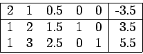
- (a)
- What is the dual problem to the LP relaxation?
- (b)
- Show that any feasible solution to the LP relaxation with 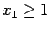 has value at least 5.5.
- (c)
- What can you say about the value of x1 in any optimal solution?
(intentionally left blank)
When we looked at tabu search, we considered the problem of finding the minimum spanning tree in a graph subject to some side constraints. The tabu search process gives a feasible solution, and hence an upper bound on the optimal value. How would you find a lower bound on the optimal value? (Note: please include details. You will not get much credit for a two-word answer!)
(intentionally left blank)